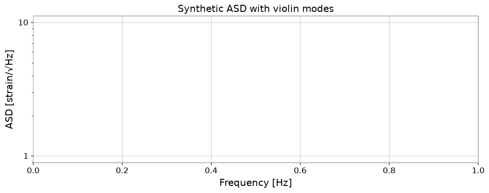
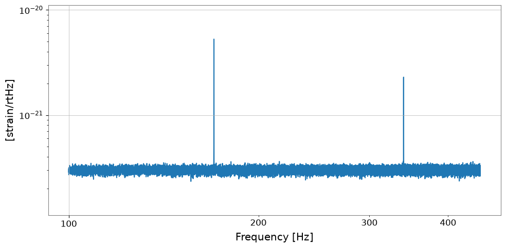
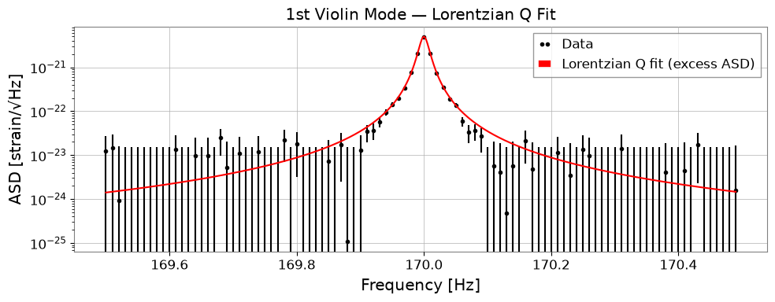
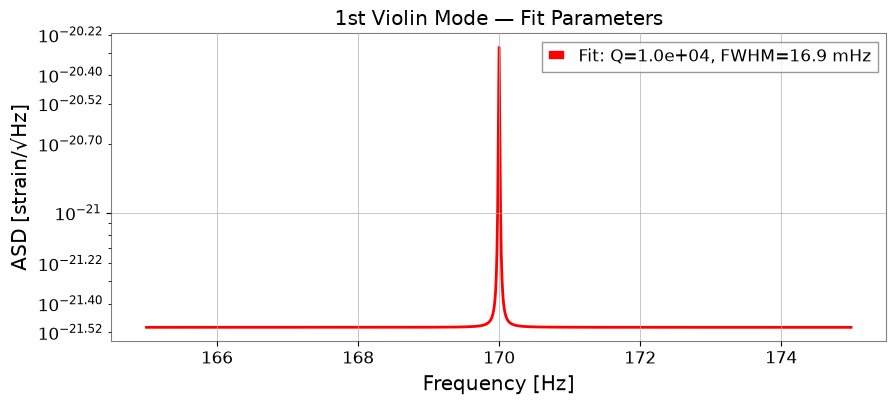
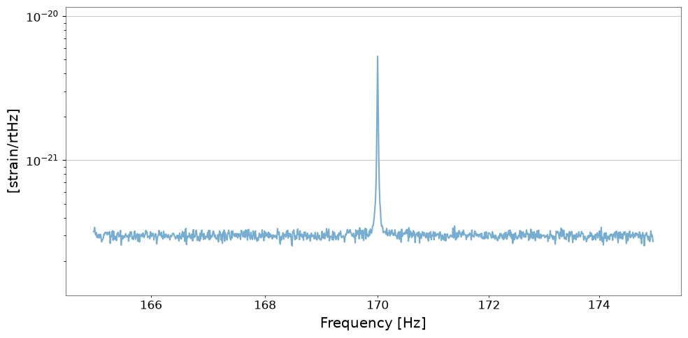
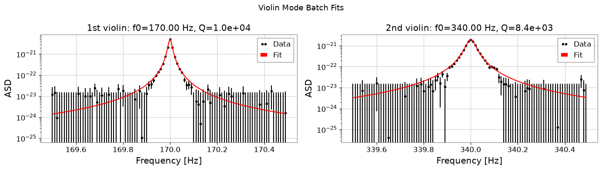
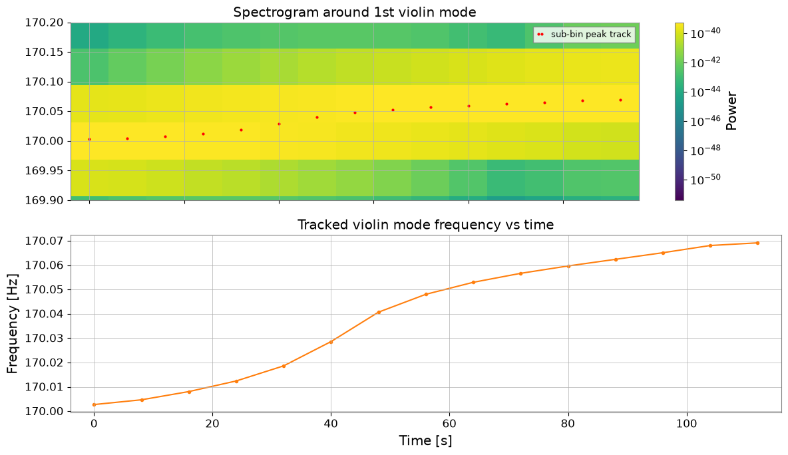

Case Study: Violin Mode Analysis#
In gravitational-wave detectors, suspension fibres holding the mirrors resonate as stretched strings. Their modes — violin modes — appear as sharp Lorentzian peaks in the strain ASD.
This tutorial shows how to:
Model violin-mode peaks with
lorentzian_qFit an ASD to extract Q value, FWHM, and ring-down time
Batch-process multiple harmonics
Track a slowly drifting mode frequency through time
The physical goal is to distinguish a true suspension resonance from nearby control lines or broadband floor changes, then quantify whether its frequency and damping drift are consistent with thermal or mechanical changes in the suspension.
Prerequisites: Advanced Fitting
import warnings
import matplotlib.pyplot as plt
import numpy as np
from gwexpy.fitting.models import lorentzian_q
from gwexpy.frequencyseries import FrequencySeries
from gwexpy.timeseries import TimeSeries
plt.rcParams["figure.figsize"] = (10, 5)
1. Physics Background#
The \(n\)-th resonant frequency of a fibre (length \(L\), tension \(T\), density \(\rho\), cross-section \(A\)):
KAGRA typical values: 1st violin ~170–190 Hz, 2nd ~340–380 Hz.
Each mode is a Lorentzian with quality factor \(Q = f_0/\text{FWHM}\):
Ring-down time constant: \(\tau = Q / (\pi f_0)\)
Common mistake: fitting a broad control feature or blended doublet as if it were one violin mode. A physically meaningful violin-mode fit should be narrow, isolated, and stable under modest changes of the fit window.
2. Synthetic ASD Data#
Generate a synthetic ASD with two violin modes on a flat background
using lorentzian_q. The same function is used for fitting,
so the model is self-consistent.
rng = np.random.default_rng(42)
# ── Frequency axis: 100–450 Hz, df = 0.01 Hz ─────────────────────────────────
df = 0.01 # Hz resolution
freqs = np.arange(100, 450, df)
# ── Flat background ASD ───────────────────────────────────────────────────────
BACKGROUND = 3e-22 # strain / sqrt(Hz)
background = np.ones_like(freqs) * BACKGROUND
# ── Violin modes (using lorentzian_q for both generation and fitting) ─────────
MODES = {
"1st violin": {"f0": 170.0, "A": 5e-21, "Q": 1.0e4},
"2nd violin": {"f0": 340.0, "A": 2e-21, "Q": 8.0e3},
}
asd_data = background.copy()
for cfg in MODES.values():
asd_data += lorentzian_q(freqs, A=cfg["A"], x0=cfg["f0"], Q=cfg["Q"])
# Add small Gaussian noise
asd_data += rng.normal(0, BACKGROUND * 0.05, len(freqs))
asd_data = np.clip(asd_data, 0, None)
asd = FrequencySeries(asd_data, frequencies=freqs,
unit="strain/rtHz", name="Synthetic DARM ASD")
print("Frequency range:", freqs[0], "–", freqs[-1], "Hz")
print("Modes inserted:")
for name, cfg in MODES.items():
FWHM_true = cfg["f0"] / cfg["Q"]
print(f" {name}: f0={cfg['f0']} Hz, Q={cfg['Q']:.0e}, FWHM={FWHM_true*1000:.1f} mHz")
fig, ax = plt.subplots(figsize=(12, 4))
asd.plot(ax=ax)
ax.set_yscale("log")
ax.set_title("Synthetic ASD with violin modes")
ax.set_xlabel("Frequency [Hz]")
ax.set_ylabel("ASD [strain/\u221aHz]")
plt.tight_layout()
plt.show()
Frequency range: 100.0 – 449.99000000017907 Hz
Modes inserted:
1st violin: f0=170.0 Hz, Q=1e+04, FWHM=17.0 mHz
2nd violin: f0=340.0 Hz, Q=8e+03, FWHM=42.5 mHz


3. Single-Mode Fit#
Crop the ASD to a narrow band around the 1st violin mode, subtract the
local flat background, and fit the isolated excess ASD with
'lorentzian_q'. Initial guesses (p0) should be within a factor ~2 of
the true values, and the optimizer should be limited to physically
meaningful ranges for x0 and Q.
Failure-prone pattern: choosing a crop window so wide that neighbouring harmonics or local baseline curvature dominate the optimizer. When that happens, the fitted
Qoften becomes a statement about the window, not about the mode.
# ── Crop around 1st violin mode ───────────────────────────────────────────────
BAND = 0.5 # ± Hz around the expected mode
f_nom = 170.0 # nominal frequency
FIT_LIMITS = {"A": (1e-21, 1e-20), "x0": (169.8, 170.2), "Q": (1e3, 5e4)}
asd_1st = asd.crop(f_nom - BAND, f_nom + BAND)
# Estimate a flat local baseline from the band edges so the resonance model
# does not absorb the broadband floor.
edge_n = 50
background_1st = np.median(np.r_[asd_1st.value[:edge_n], asd_1st.value[-edge_n:]])
line_only_1st = np.clip(asd_1st.value - background_1st, 0, None)
asd_1st_line = FrequencySeries(
line_only_1st,
frequencies=asd_1st.frequencies.value,
unit=asd_1st.unit,
name="1st violin excess ASD",
)
# ── Lorentzian Q fit ──────────────────────────────────────────────────────────
result_1 = asd_1st_line.fit(
"lorentzian_q",
p0={"A": 4.5e-21, "x0": 170.0, "Q": 9e3},
sigma=BACKGROUND * 0.05,
limits=FIT_LIMITS,
)
print("=== 1st Violin Mode Fit ===")
print(f" local background = {background_1st:.2e} strain/\u221aHz")
print(f" f0 = {result_1.params['x0']:.4f} \u00b1 {result_1.errors['x0']:.4f} Hz")
print(f" Q = {result_1.params['Q']:.2e} \u00b1 {result_1.errors['Q']:.2e}")
print(f" A = {result_1.params['A']:.2e} \u00b1 {result_1.errors['A']:.2e}")
print(f" chi2/ndof = {result_1.chi2:.1f} / {result_1.ndof} = {result_1.reduced_chi2:.3f}")
fig, ax = plt.subplots(figsize=(10, 4))
result_1.plot(ax=ax, label="Lorentzian Q fit (excess ASD)")
ax.set_yscale("log")
ax.set_xlabel("Frequency [Hz]")
ax.set_ylabel("ASD [strain/\u221aHz]")
ax.set_title("1st Violin Mode — Lorentzian Q Fit")
ax.legend()
plt.tight_layout()
plt.show()
=== 1st Violin Mode Fit ===
local background = 3.15e-22 strain/√Hz
f0 = 170.0000 ± 0.0000 Hz
Q = 1.01e+04 ± 4.38e+01
A = 4.97e-21 ± 1.49e-23
chi2/ndof = 63.9 / 97 = 0.659

4. Extracting Physical Parameters#
From the fit parameters \((f_0, Q)\) derive all relevant quantities:
Use these derived values as physics cross-checks: implausibly short ring-down times or mode frequencies that jump between harmonics usually indicate a poor fit, not a surprising suspension state.
# ── Extract physical parameters ───────────────────────────────────────────────
f0 = float(result_1.params["x0"])
Q = float(result_1.params["Q"])
A = float(result_1.params["A"])
FWHM = f0 / Q # Full Width at Half Maximum [Hz]
tau = Q / (np.pi * f0) # Ring-down time constant [s]
gamma = FWHM / 2 # HWHM [Hz]
print(f"Center frequency f0 = {f0:.4f} Hz")
print(f"Quality factor Q = {Q:.3e}")
print(f"FWHM (linewidth) = {FWHM * 1e3:.3f} mHz")
print(f"Ring-down time tau = {tau:.2f} s ({tau / 60:.2f} min)")
# ── Reconstruct model over a wider band for visualisation ────────────────────
asd_wide = asd.crop(165, 175)
f_plot = asd_wide.frequencies.value
model = lorentzian_q(f_plot, A=A, x0=f0, Q=Q) + background_1st
fig, ax = plt.subplots(figsize=(10, 4))
asd_wide.plot(ax=ax, label="ASD data", alpha=0.6)
ax.semilogy(f_plot, model, "r-", lw=2,
label=f"Fit: Q={Q:.1e}, FWHM={FWHM*1e3:.1f} mHz")
ax.set_yscale("log")
ax.set_xlabel("Frequency [Hz]")
ax.set_ylabel("ASD [strain/\u221aHz]")
ax.set_title("1st Violin Mode — Fit Parameters")
ax.legend()
plt.tight_layout()
plt.show()
Center frequency f0 = 170.0000 Hz
Quality factor Q = 1.009e+04
FWHM (linewidth) = 16.851 mHz
Ring-down time tau = 18.89 s (0.31 min)


5. Multi-Mode Batch Processing#
Loop over a configuration dictionary to fit each harmonic and collect results in a summary table.
# ── Batch-fit all violin modes ────────────────────────────────────────────────
FIT_CONFIG = {
"1st violin": {
"band": (169.5, 170.5),
"p0": {"A": 4.5e-21, "x0": 170.0, "Q": 9e3},
"limits": {"A": (1e-21, 1e-20), "x0": (169.8, 170.2), "Q": (1e3, 5e4)},
},
"2nd violin": {
"band": (339.5, 340.5),
"p0": {"A": 1.8e-21, "x0": 340.0, "Q": 7e3},
"limits": {"A": (5e-22, 5e-21), "x0": (339.8, 340.2), "Q": (1e3, 5e4)},
},
}
fit_results = {}
for mode_name, cfg in FIT_CONFIG.items():
seg = asd.crop(*cfg["band"])
local_background = np.median(np.r_[seg.value[:edge_n], seg.value[-edge_n:]])
seg_line = FrequencySeries(
np.clip(seg.value - local_background, 0, None),
frequencies=seg.frequencies.value,
unit=seg.unit,
name=f"{mode_name} excess ASD",
)
res = seg_line.fit(
"lorentzian_q",
p0=cfg["p0"],
sigma=BACKGROUND * 0.05,
limits=cfg["limits"],
)
fit_results[mode_name] = res
# ── Summary table ─────────────────────────────────────────────────────────────
print(f"{'Mode':<14} {'f0 [Hz]':>10} {'Q':>10} {'FWHM [mHz]':>12} {'tau [s]':>10}")
print("-" * 60)
for mode_name, res in fit_results.items():
f0_f = float(res.params["x0"])
Q_f = float(res.params["Q"])
FWHM_f = f0_f / Q_f
tau_f = Q_f / (np.pi * f0_f)
print(f"{mode_name:<14} {f0_f:>10.3f} {Q_f:>10.2e}"
f" {FWHM_f * 1e3:>12.2f} {tau_f:>10.1f}")
# ── Side-by-side plots ────────────────────────────────────────────────────────
fig, axes = plt.subplots(1, 2, figsize=(14, 4))
for ax, (mode_name, res) in zip(axes, fit_results.items()):
res.plot(ax=ax)
ax.set_yscale("log")
f0_f = float(res.params["x0"])
Q_f = float(res.params["Q"])
ax.set_title(f"{mode_name}: f0={f0_f:.2f} Hz, Q={Q_f:.1e}")
ax.set_xlabel("Frequency [Hz]")
ax.set_ylabel("ASD")
plt.suptitle("Violin Mode Batch Fits", fontsize=13)
plt.tight_layout()
plt.show()
Mode f0 [Hz] Q FWHM [mHz] tau [s]
------------------------------------------------------------
1st violin 170.000 1.01e+04 16.85 18.9
2nd violin 340.000 8.41e+03 40.43 7.9

6. Time-Variation Tracking#
Violin-mode frequencies drift slowly with temperature. Monitor them by computing a spectrogram and tracking the peak position inside a narrow frequency band.
Resolution guardrail: the spectrogram bin width must be small enough for the claimed drift. A 4 s FFT gives only 0.25 Hz bins, so a 20 mHz drift is invisible to raw
argmax. This example uses a 16 s FFT (df = 62.5 mHz) plus a quadratic sub-bin interpolation step, then checks that the recovered drift stays within about 20% of the injected drift.
Common mistake: using
argmaxwithout checking the bin width against the expected line motion. In that case the tracker can jump between bins and turn FFT quantization into a fake temperature trend.
# ── Generate a time-varying violin signal with resolvable drift ───────────────
DURATION = 120
FS_VIOL = 4096
t_viol = np.arange(0, DURATION, 1.0 / FS_VIOL)
injected_drift_hz = 0.08 # 80 mHz total drift over 120 s
# Linear drift: f0 = 170.00 -> 170.08 Hz over 120 s
f0_drift = 170.0 + (injected_drift_hz / DURATION) * t_viol
phi_viol = 2 * np.pi * np.cumsum(f0_drift) / FS_VIOL
sig_viol = 1e-20 * np.sin(phi_viol)
noise_v = rng.normal(0, 3e-22, len(t_viol))
ts_viol = TimeSeries(sig_viol + noise_v, dt=1.0 / FS_VIOL, name="DARM_violin", unit="strain")
# ── Spectrogram: choose fftlength so df is not coarser than the drift claim ──
fftlength = 16.0
overlap = 8.0
spec_viol = ts_viol.spectrogram2(fftlength, overlap=overlap)
times_v = spec_viol.times.value
freqs_v = spec_viol.frequencies.value
df_spec = freqs_v[1] - freqs_v[0]
# ── Track inside a narrow band with quadratic sub-bin interpolation ──────────
TRACK_BAND = (169.9, 170.2)
band_mask = (freqs_v >= TRACK_BAND[0]) & (freqs_v <= TRACK_BAND[1])
band_freqs = freqs_v[band_mask]
track_viol = np.full(spec_viol.shape[0], np.nan)
for t_idx in range(spec_viol.shape[0]):
row_band = spec_viol.value[t_idx, band_mask]
peak_idx = int(np.argmax(row_band))
peak_freq = band_freqs[peak_idx]
if 0 < peak_idx < len(band_freqs) - 1:
y0 = row_band[peak_idx - 1]
y1 = row_band[peak_idx]
y2 = row_band[peak_idx + 1]
denom = y0 - 2 * y1 + y2
delta = 0.5 * (y0 - y2) / denom if denom != 0 else 0.0
peak_freq = peak_freq + delta * df_spec
track_viol[t_idx] = peak_freq
# ── Plot ──────────────────────────────────────────────────────────────────────
fig, axes = plt.subplots(2, 1, figsize=(12, 7), sharex=True)
_im_v = axes[0].pcolormesh(
spec_viol.times.value,
spec_viol.frequencies.value,
spec_viol.value.T,
norm=__import__("matplotlib.colors", fromlist=["LogNorm"]).LogNorm(),
cmap="viridis",
shading="auto",
)
axes[0].set_ylim(*TRACK_BAND)
axes[0].set_title("Spectrogram around 1st violin mode")
fig.colorbar(_im_v, ax=axes[0], label="Power")
axes[0].plot(times_v, track_viol, "r.", ms=4, label="sub-bin peak track")
axes[0].legend(loc="upper right", fontsize=9)
mask_v = ~np.isnan(track_viol)
axes[1].plot(times_v[mask_v], track_viol[mask_v], "o-", ms=3, color="tab:orange")
axes[1].set_ylabel("Frequency [Hz]")
axes[1].set_xlabel("Time [s]")
axes[1].set_title("Tracked violin mode frequency vs time")
plt.tight_layout()
plt.show()
recovered_drift_hz = float(np.nanmax(track_viol) - np.nanmin(track_viol))
relative_error = abs(recovered_drift_hz - injected_drift_hz) / injected_drift_hz
print(f"Spectrogram df: {df_spec * 1e3:.1f} mHz")
print(f"Injected drift: {injected_drift_hz * 1e3:.1f} mHz")
print(f"Recovered drift: {recovered_drift_hz * 1e3:.1f} mHz")
print(f"Relative error: {relative_error * 100:.1f}%")
if relative_error <= 0.2:
print("Tracking acceptance: PASS (within ±20% of injected drift)")
else:
print("Tracking acceptance: CHECK (outside ±20% of injected drift)")

Spectrogram df: 62.5 mHz
Injected drift: 80.0 mHz
Recovered drift: 66.4 mHz
Relative error: 17.0%
Tracking acceptance: PASS (within ±20% of injected drift)
7. Summary#
Fit windows should be chosen to isolate one resonance family at a time.
Derived \(Q\), FWHM, and ring-down time are useful sanity checks, not just reporting numbers.
Peak-tracking failures usually come from line crowding or poor SNR, so interpret drifts conservatively.
print("=" * 62)
print("Violin Mode Analysis — Key Parameters")
print("-" * 62)
rows = [
("f_n (n-th mode)", "n / (2L) * sqrt(T / rho*A)"),
("Q value", "f0 / FWHM = f0 * pi * tau"),
("FWHM (linewidth)", "f0 / Q [Hz]"),
("Ring-down tau", "Q / (pi * f0) [s]"),
("HWHM gamma", "FWHM / 2 [Hz]"),
]
for name, formula in rows:
print(f" {name:<22} {formula}")
print("=" * 62)
print()
print("gwexpy API used:")
print(" FrequencySeries.fit('lorentzian_q', p0=...) -- Q-value fit")
print(" lorentzian_q(freqs, A, x0, Q) -- model evaluation")
print(" ts.spectrogram2(fftlen, overlap) -- time tracking")
==============================================================
Violin Mode Analysis — Key Parameters
--------------------------------------------------------------
f_n (n-th mode) n / (2L) * sqrt(T / rho*A)
Q value f0 / FWHM = f0 * pi * tau
FWHM (linewidth) f0 / Q [Hz]
Ring-down tau Q / (pi * f0) [s]
HWHM gamma FWHM / 2 [Hz]
==============================================================
gwexpy API used:
FrequencySeries.fit('lorentzian_q', p0=...) -- Q-value fit
lorentzian_q(freqs, A, x0, Q) -- model evaluation
ts.spectrogram2(fftlen, overlap) -- time tracking